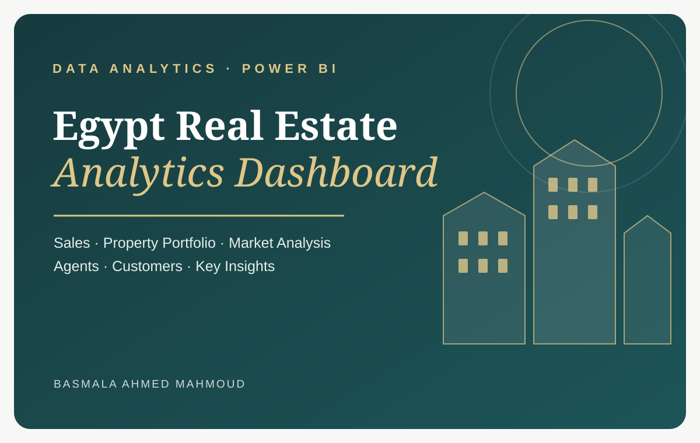

04 / REAL ESTATE ANALYTICS
Egypt Real Estate Analytics Dashboard
A multi-page dashboard project organized around sales performance, property portfolio and market analysis, agents and customers, and key insights.

01Executive Overview
02Property & Market
03Agents & Customers
04Key Insights
PROJECT WALKTHROUGH
Explore the dashboard.
Dashboard screenshots can be added to each section when they are available.
01
Executive Overview
Sales & Performance Dashboard
SCREENSHOT PLACEHOLDER
02
Property & Market
Property Portfolio & Market Analysis
SCREENSHOT PLACEHOLDER
03
Agents & Customers
Agent performance and customer analysis
SCREENSHOT PLACEHOLDER
04
Key Insights
Key findings and recommendations based on the dashboard analysis
SCREENSHOT PLACEHOLDER